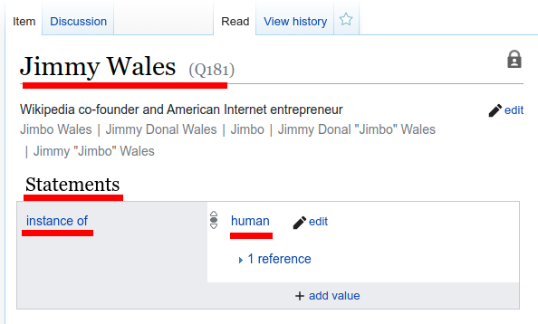
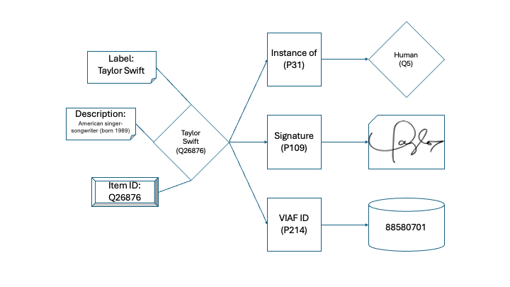
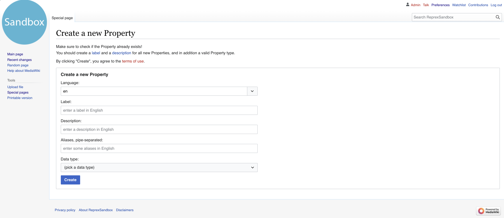
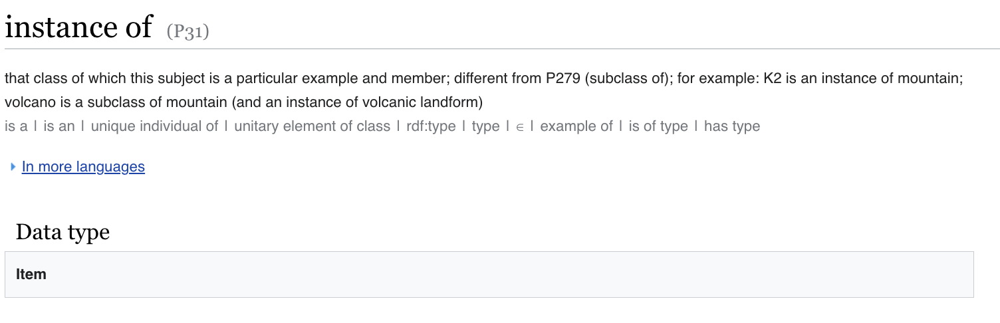

Preamble
This guide is aimed at helping anyone start using Wikibase and in conjunction its biggest instance Wikidata. The guide uses images and examples mostly from a local MediaWiki/Wikibase instance, however, some images are taken from Wikibase’s own documentations (these are cited as well).
Introduction
Before we proceed to the use of Wikibase it is important to understand the general principles behind it. This is important not only to gain a bit deeper insight into its use, but also to see the benefits of applying this kind of technology in certain uses over other solutions.
Wikibase
Wikibase is software that lets you store information in a highly structured way. Specifically Wikibase is an extension to MediaWiki that lets you use the wiki to store structured data, mainly in the form of items and properties that combine to help form statements. There’s plenty of other software out there that lets you store information. A “notes” app on a mobile phone stores information or a contacts database. Wikibase lets you store information that’s meant to be consumed and thoroughly digested by computers, connected to other information systems, collaboratively edited, and shared.1
Data modeling in Wikibase
In Wikibase, you’ll need to think of your data in terms of the concepts Wikibase uses to store data: items, properties, statements, and so forth.2

Item
An item is an individual entity in Wikibase, identified by its ID starting with the letter “Q” (QID), and described by its label and description. It is important to note that QID values are assigned automatically by the software, and it is something that you cannot change. This means that you cannot directly assign a QID of your choice nor you can modify it after creation. Aliases can also be defined for an item which are alternate names for your item, e.g. nicknames or abbreviated forms.

In this illustration we see the item Q26876 from Wikidata3. This item has the label Taylor Swift and the description American singer-songwriter (born 1989). As we move on with the concepts later in this guide, this image will be referred as an example.
Properties
We have seen that our most basic data entities in Wikibase are items. That said items in themselves are quite empty or one could even shallow in their representation. This is where properties come into the picture. In Wikibase, properties are additional types of data that are used to describe different aspects of a given item. An item’s own fields (QID, label, description, aliases) are not really useful for more than simply identifying the given item, however they do not tell us much about the given item. Properties are used for that.
Properties are bit more complicated in their detail than items in that they can have various datatypes, and when used can additional qualifiers and references. Fear not, we will tackle them step by step.
First and foremost, let us look at a blank property in its own:

We see, that just like items, properties also use a label, description and aliases field. However they contain an additional — and mandatory — field: Data type, more on that in a tiny bit later. Properties — just like items — also have their own IDs. However property IDs start with the letter “P” (PID). This way simply looking at an ID we can instantly recognize whether that belongs to an item or a property.
Back to data types: the data type of a property is useful for both the person using the software and the software handling the data. Data types are a predefined set of rules that govern how a property can be used after creation. Selecting the data type that is best suited for the purpose of a property is of key importance in managing a data set in Wikibase (and in many other database system as well for that matter).
The following data types are defined in Wikibase:
- Commons media file
- External identifier
- Geographic coordinates
- Geographic shape
- Item
- Monolingual text
- Point in time
- Property
- Quantity
- String
- Tabular data
- URL
Let us consider the most ubiquitous property in Wikibase: instance of (P31)4.

As we can see, this property has the PID P31, the label “instance of”, the description “that class of which…” and importantly the data type item (and also aliases written below the description in grey, divided by the ‘|’ character). The item data type is one of the most used forms of properties, and as such, it is useful to know how it works. Item type properties work like pointers, in the sense that their value is the ID of an item. For example in the case of our previous example of Taylor Swift, we can see that the Taylor Swift is an instance of a human. In Wikibase terminology, item Q26876 (Taylor Swift) has the property instance of with value of Q5 (human). As we can see, “human” here is not only a label, text or string, but another item in our database quite like the item Taylor Swift itself is.
For the purpose of this guide we will not (yet) go through all property data types in detail, however given by the example above it should be clear that property data types are of key importance and should thought of carefully when assembling our data in Wikibase.
With this let us continue to the practical side of this guide. In the next chapter we will see how we can create an account and log in.
Using Wikibase
Creating an account and logging in
Depending on the type of the MediaWiki instance in use, you may need to create an account if you want access the site. This can vary as there several options that control the “publicness” of a MediaWiki (and in turn the Wikibase instance connected to it).
If we visit our Sandbox